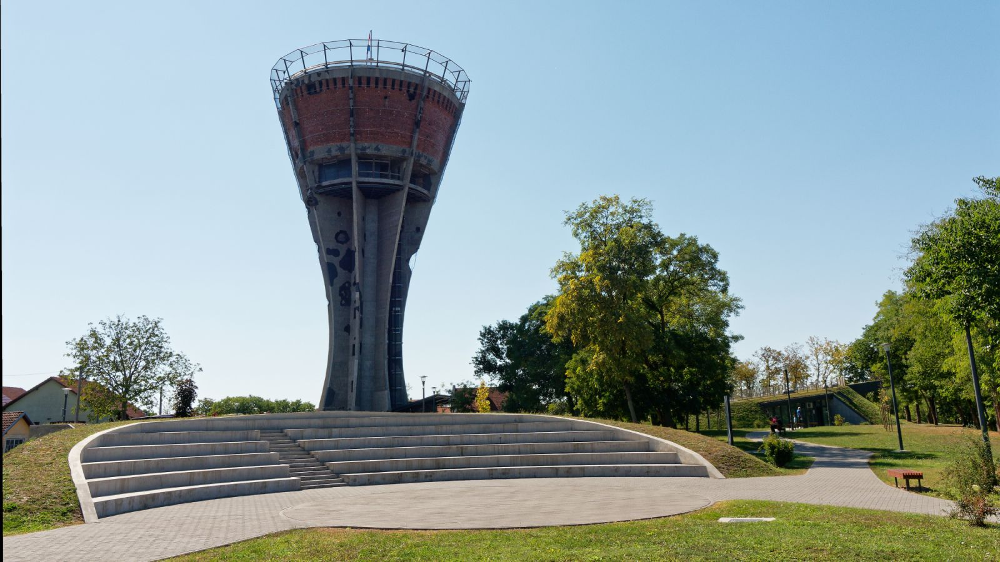

Memorijalni turizam – Vukovarski nokturno
Vukovarski nokturno nosi u sebi ljubav i hrabrost, snagu koja raste iz boli i dostojanstvo koje svijetli čak i u najmračnijim trenucima — priča o životu koji pobjeđuje.
Saznaj višeVukovar za suvremenog putnika
Grad luke, street arta i industrijske baštine pretvorene u prostor kreativnog izraza.
Saznaj više
Dvorac Eltz
Smješten uz obalu Dunava, dvorac Eltz s ponosom čuva bogatu povijest i plemićlu eleganciju Vukovara, pozivajući posjetitelje na putovanje kroz stoljeća kulturne i umjetničke baštine.
Saznaj više